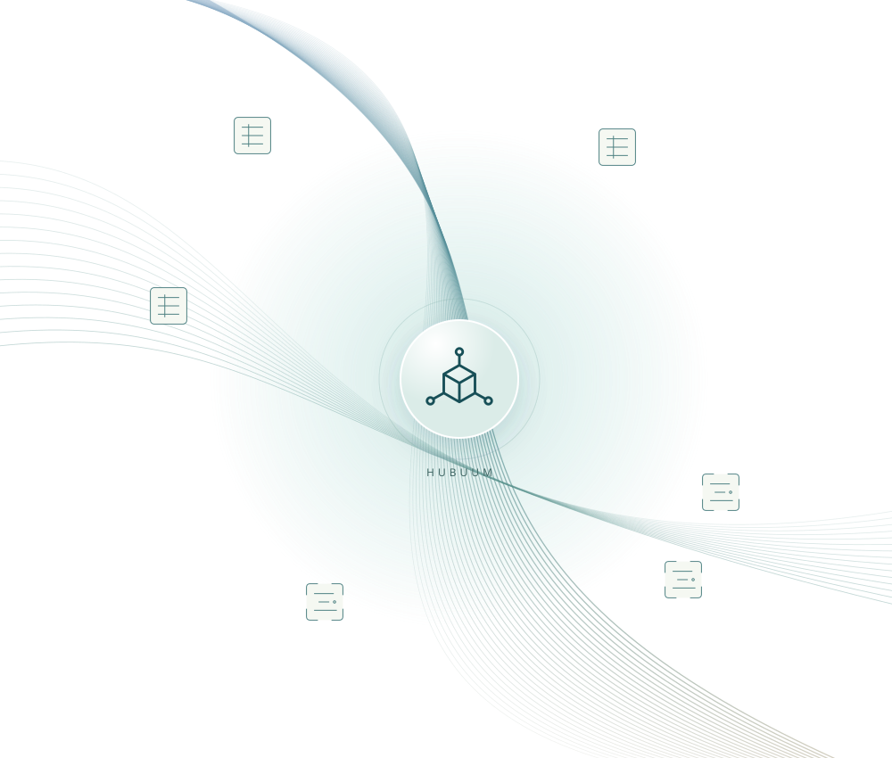
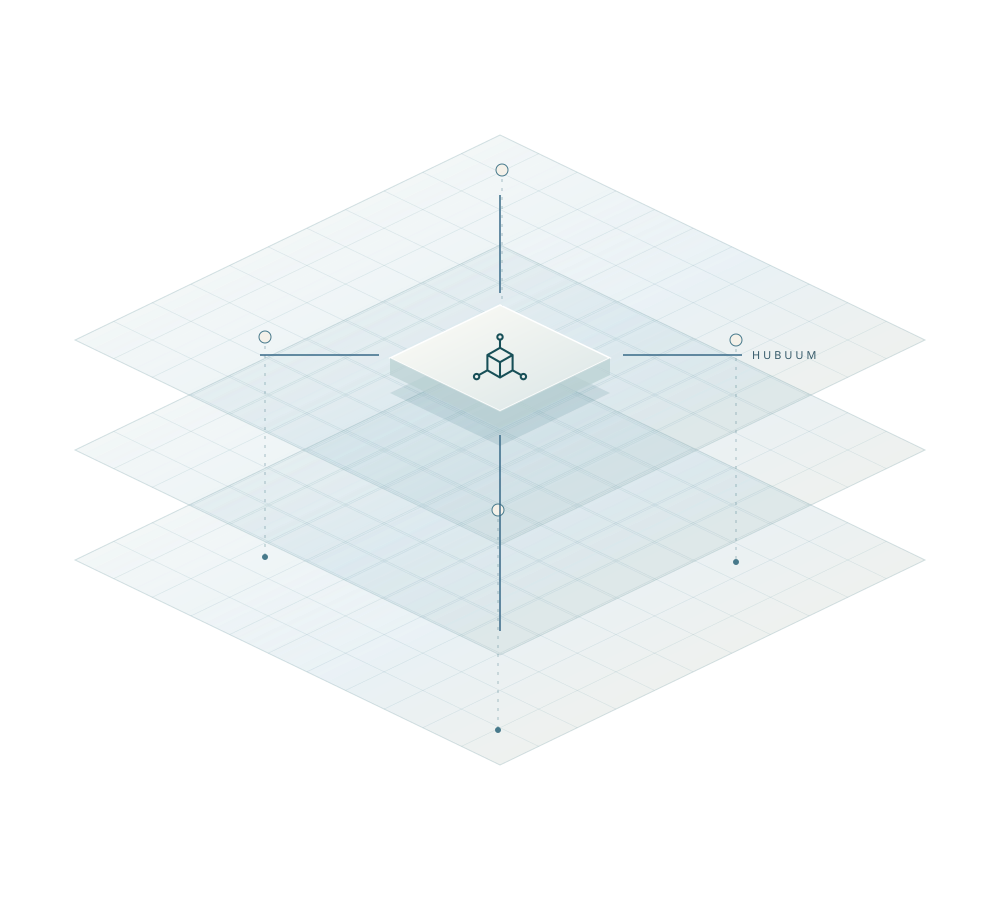

A shared centre. Three perspectives.
A world of connections.
A place to bring them together.
Three directions for Hubuum’s next front page. Each explores the same idea: independent systems, connected through a common model. Open a study and follow the story as it unfolds.

Confluence
Fine currents gather around a shared centre, then travel outward together. An airy, understated expression of Hubuum as the meeting point for your data.
Explore this direction
Orbit
A luminous centre holds a constellation of independent systems. A spacious, darker direction that makes the hub the unmistakable focus.
Explore this direction
Fabric
Translucent planes and crossing paths form a connected foundation. An architectural direction with a more editorial voice and a strong sense of structure.
Explore this directionThe feeling.
The flow.
The connections.
These are complete scrolling studies, with working navigation and a small interactive explanation of the resource model. Compare the opening image, the transition into the story, and the way the ecosystem is introduced.
Confluence is the calmest direction. Orbit makes the strongest statement about the hub. Fabric gives the model an architectural, editorial character.
The network artwork is conceptual imagery. It illustrates the product’s ideas, rather than depicting a graph visualisation in the current frontend.